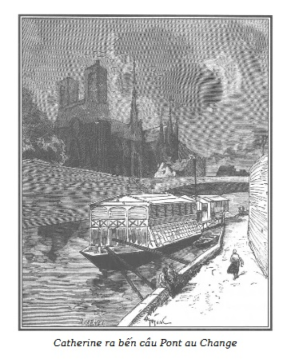

Rigolette thấy ái ngại cho số phận người em gái bác Hề Giấm, nên không ngớt nhìn chị, tìm cách xích lại gần chị để làm thân. Thật không may, một người đi vào khu thăm hỏi, chờ gặp một tội phạm đang được gọi đến, bỗng ngồi lèn vào giữa hai người phụ nữ.
Thấy mặt người đó, Rigolette không khỏi rùng mình, sửng sốt. Cô nhận ra một trong hai tên lính tòa đã đến nhà bắt giam bác Morel, thực thi lệnh câu thúc thân thể bác, vốn đã được tòa án phê chuẩn theo yêu cầu của Jacques Ferrand.
Tình huống này làm Rigolette nhớ lại kẻ đã một mực bền bỉ truy hại Germain nên càng buồn, dù rằng đã hơi khuây khuây được phần nào vì những lời than vãn não nề xúc động lòng người của cô em gái bác Hề Giấm.
Xích ra xa tên mới đến, cô thợ khâu đỏm dáng dựa lưng vào tường và lại chìm đắm trong đau buồn.
– Này, Jeanne ạ, – nét mặt bác Hề Giấm đang vui vẻ và giễu cợt phút chốc sa sầm – anh không khỏe, cũng không gan góc, nhưng nếu lúc thằng chồng em nó hành hạ em mà anh có mặt ở đấy thì anh sẽ chẳng để nó yên, với lại em cũng quá lành kia!
– Thế thì anh muốn làm thế nào? Đã không ngăn nổi thì em đành chịu khổ. Chừng nào trong nhà còn cái gì bán được thì hắn còn bán tống bán tháo đi để dắt con nhân tình vào quán rượu, bán tất, bán đến cả cái áo mặc ngày Chủ nhật của con gái nữa.
– Nhưng tiền công hằng ngày của em sao lại đưa cho hắn? Tại sao không giấu bớt đi?
– Em có giấu đấy chứ! Nhưng nó đánh em tợn quá! Đánh đến nỗi em phải xùy tiền ra. Chẳng phải vì sợ đòn mà em chịu nghe, mà chỉ vì em nghĩ ngộ nhỡ nó quá tay làm em bị thương nặng mất cả làm ăn hàng tháng, chẳng hạn như gãy tay thì lúc bấy giờ sẽ như thế nào? Ai sẽ nuôi nấng, trông coi mấy đứa trẻ? Nếu em lại phải vào nhà thương làm phúc thì các cháu đến chết đói mất! Vì thế, anh phải hiểu cho, chẳng thà đưa mà còn sức, còn người làm lụng nuôi con chứ!
– Khốn khổ thân em! Thôi, thiên hạ cứ hay nói đến tuẫn đạo, chính em là thế chứ còn ai vào đây nữa!
– Mà xưa nay em có làm hại đến ai bao giờ! Em chỉ muốn làm lụng, hầu chồng nuôi con. Nhưng biết làm thế nào! Trên đời có kẻ sướng, người khổ, cũng như có kẻ tốt, người xấu.
– Phải! Người tốt mà sướng được thì mới là lạ. Nhưng rốt cuộc, lúc này em đã rũ hẳn được cái thằng chồng ăn mày ấy đi chưa?
– Được vậy đã phúc! Vì chỉ sau khi đã bán đến cả cái dát giường và nôi của hai đứa bé, hắn mới cút. Nhưng cứ nghĩ đến việc hắn còn muốn cái tệ hơn…
– Sao? Cái gì nữa vậy?
– Khi nói hắn, thì đúng hơn phải nói cái con đàn bà xấu xa kia thúc đẩy hắn, có thể anh mới hiểu. Một bữa hắn bảo em: “Trong nhà mà có một đứa con gái mười lăm tuổi xinh đẹp như con bé nhà ta này, thì có là ngu mới không biết đem cái sắc đẹp của nó ra mà kiếm ăn!”
– Ái chà chà! Anh hiểu! Bán hết quần áo rồi bây giờ đến lượt bán trôn đây mà!
– Nghe hắn nói vậy, anh coi, em mới điên tiết lên, như thế là phải chứ, em bèn mắng cho hắn một trận mất mặt. Vì cái con nhân tình nhân ngãi xấu xa của hắn lại chõ mõm vào mà bảo chồng em có quyền sắp đặt cho con gái theo ý muốn, em mới cho cái con khốn nạn ấy một mẻ đến nỗi chồng em nó đánh em và từ đó mất mặt cả hai đứa.
– Này Jeanne, em thấy không, có những người không đến nỗi quá tồi tệ như thằng chồng em mà bị ngồi tù đến mười năm đấy. Mạt ra thì họ chỉ mới có trấn lột người dưng. Thằng chồng em quả thực là thằng đại khốn nạn.
– Tuy nhiên, về căn bản thì hắn cũng không đến nỗi quá tồi, anh hiểu không? Chỉ vì giao du với bè bạn xấu nơi quán rượu mà sinh hư đốn như thế.
– Phải!!! Hắn có thể sẽ không làm đau một đứa trẻ đâu, nhưng hành hạ người lớn thì lại là một câu chuyện khác…
– Vậy thì, biết làm thế nào? Chúa an bài cho được ra sao thì đành thế vậy. Chẳng gì thì thằng chồng em đã bỏ đi, em không còn lo bị nó đánh thành tật nữa, em vững dạ hơn. Chẳng còn tiền để chuộc cái nệm nằm, vì dù sao trước hết cũng phải sống và đã đến kỳ trả nợ. Vậy mà cả hai mẹ con, em và cháu Catherine đáng thương ấy, cả hai mẹ con một ngày hầu như không kiếm nổi bốn mươi xu, còn hai đứa kia thì lại quá nhỏ, đã đỡ đần gì được. Đến cái đệm nằm cũng chẳng có, cả nhà phải nằm trên ổ rơm, rơm nhặt được ở cửa nhà người đóng gói hàng cùng phố.
– Vậy mà anh có đồng nào là tiêu hết! Anh tiêu hết cả tiền!
– Biết sao được! Anh làm sao biết được em đến nông nỗi này. Vì em nào có cho anh hay! Sau đó, em và cháu Catherine lại càng ra sức làm lụng. Tội nghiệp con bé, rõ thực thà, chăm chỉ và tốt bụng anh ạ. Lúc nào cũng nhìn mẹ xem mẹ muốn sai bảo điều gì, chẳng bao giờ phàn nàn. Và tuy là mười lăm tuổi đầu mà đã trải qua, đã biết thế nào là cái khổ. Có được đứa con như thế nghĩ cũng mát lòng, hả dạ, phải không anh Fortuné? – Chị Jeanne vừa nói vừa lau nước mắt.
– Như thế thì cháu thật giống em như đúc. Ít ra thì cũng phải thế để mà được an ủi phần nào chứ!

.– Này, anh ạ, cam đoan là em lo lắng buồn phiền cho cháu nhiều hơn cho mình. Vì, anh thấy không, đã hai tháng nay cháu làm không ngơi tay lúc nào. Mỗi tuần một lần, cháu ra tận các tàu đậu ở bến cầu Pont au Change, mất ba xu một giờ, để giặt giũ chỗ quần áo ít ỏi của mấy mẹ con mà bố cháu chưa lấy đi, còn thì lúc nào cũng như chó xích một chỗ, chẳng còn được đi đến đâu. Thật tình, con bé sớm gặp rủi ro quá. Em thừa biết là thế nào vận rủi cũng đến, nhưng ít ra thì cũng thư thư được một vài năm yên lành như người ta chứ! Điều làm em phiền muộn nhất trong tất cả lúc này, anh Fortuné ạ, đó là chẳng thể giúp anh được tí gì. Tuy nhiên em sẽ hết sức!
– Úi chao! Thế em tưởng là anh bằng lòng nhận sao? Trái lại, giờ đây, muốn nghe anh kể chuyện nhảm thì mỗi người sẽ phải chịu một xu đấy. Anh sẽ đòi hai xu, bằng không thì sẽ nhịn nghe truyện cổ tích của Hề Giấm. Và thế là anh sẽ giúp em được chút ít. À mà tại sao em lại không thuê phòng có cả đồ đạc, như vậy thì thằng chồng em còn bán vào đâu được?
– Thuê phòng cả đồ đạc ấy à? Anh cứ tính xem: nhà có tất cả có bốn người, họ sẽ đòi ít ra là hai mươi xu mỗi ngày, thế thì còn gì để mà sống? Trong khi đó thì buồng của em cả năm chỉ hết có năm mươi franc.
– Ừ, phải đấy! – Hề Giấm châm biếm, cay đắng. – Cứ lao động để rồi ngay khi vừa mới kiếm được ít nhiều, thằng chồng lại về giật mất. Rồi một ngày nào đó, nó sẽ bán con gái mình như đã bán quần áo.
– Ôi, như thế thì thà nó giết em đi còn hơn. Khốn khổ cho con Catherine!
– Nó sẽ không giết em đâu, và nó sẽ bán con Catherine đấy. Nó là thằng chồng em phải không? Nó là chủ tài sản chung như ông trạng sư đã nói với em, chừng nào mà hai người chưa ly dị trước tòa, và vì em không có đủ năm trăm franc đóng tiền án phí thì em đành chịu, chồng em có quyền đem con gái từ nhà đến chỗ nào cũng được. Nó cùng con nhân ngãi đã cố bám riết để làm hư hỏng con bé tội nghiệp ấy, thì cháu làm sao có thể thoát được?
– Lạy Chúa tôi! Lạy Chúa! Nếu mà điều ô nhục ấy lại có thể xảy ra… vậy thì còn đâu là công lý?
– Công với chẳng lý! – Hề Giấm phá lên cười cay đắng. – Công lý như là miếng thịt ấy, đắt quá, người nghèo ăn sao được! Chỉ có một cách hiểu như thế này này: nếu mà để đưa người nghèo đi bỏ tù ở Melun, bắt đeo gông hay đi chèo thuyền thì đó lại là một chuyện khác. Người ta sẽ ban cho cái công lý ấy mà không tính tiền. Nếu họ cắt cổ người nghèo… vẫn cứ không tính tiền. Bao giờ cũng miễn phí! Lấy vé đi, các ngài! – Hề Giấm lấy giọng lái đò rao to. – Không phải trả tiền! Một hào, hai xu! Một xu, ngay một trinh con cũng không phải trả! Không phải trả! Thưa các ngài, chẳng mất tí gì! Miễn hết! Vừa sức tất cả mọi người, chỉ việc nộp có cái đầu mà thôi. Cắt đầu và phi-dê, Nhà nước chịu mọi tổn phí! Công lý miễn phí là thế! Nhưng mà thứ công lý có thể ngăn ngừa giúp cho một người phụ nữ lương thiện, một người mẹ trong gia đình khỏi bị đánh đập và bóc lột bởi một thằng chồng khốn kiếp nó muốn và có thể đem con gái ra kiếm tiền, cái thứ công lý ấy giá những năm trăm franc. Và em đành chịu nhịn cái thứ công lý ấy thôi, Jeanne ạ!
– Này, anh Fortuné, – người mẹ tội nghiệp ấy khóc òa lên – anh làm em chết mất thôi!
– Là vì bởi anh cũng đang như thế, khi nghĩ đến số phận của em, gia đình em, khi thấy anh đành chịu bó tay không làm thế nào được… Anh có vẻ như lúc nào cũng cười đùa được. Nhưng có hai tạng vui vẻ kia, thấy không Jeanne? Tạng vui vẻ vui và tạng vui vẻ buồn. Anh không có lực cũng như không có gan để hung ác, giận dữ hay thù hận như những người khác. Những thứ đó ở anh chỉ phát tiết ra bằng lời nói ít nhiều nực cười thôi. Thói nhút nhát và thể lực yếu đuối đã ngăn được anh khỏi tồi tệ hơn thế này. Cũng phải có cái cơ hội, căn nhà tồi tàn, trơ trọi, vắng chủ, không một con mèo, nhất là không một con chó để thúc đẩy anh đi ăn trộm. Lại vì ngẫu nhiên mà trăng hôm đó sao lại sáng, vì ban đêm mà có mỗi mình thì anh sợ không biết thế nào mà kể.
– Ấy chính vì thế mà em vẫn luôn nói với anh, anh Fortuné tội nghiệp ạ, là anh tốt nhiều hơn anh tưởng… Vì vậy, em hy vọng là quan tòa sẽ rủ lòng thương hại anh!
– Thương hại anh ấy à? Thương một thằng tù đã được phóng thích tái phạm? Cứ trông vào đấy đi! Dù sao thì anh cũng không oán trách họ, ngồi tù ở đây, ở chỗ kia hay ở chỗ khác đi nữa đối với anh cũng chẳng sao. Với lại, em nói cũng phải, anh không độc ác. Và những kẻ nào độc ác thì anh căm ghét chúng theo kiểu của anh, anh chế giễu chúng nó. Phải tin là do kể mãi những câu chuyện để làm cho thính giả mê thích, anh lúc nào cũng sắp đặt sao cho những kẻ thường hành hạ người khác, vì bản chất tàn bạo, cuối cùng đều bị thất bại đê nhục cả. Thế là anh đâm quen, kể thế nào thì mình cảm nghĩ như thế.
– Những người bạn tù của anh, họ mê những chuyện như vậy sao? Chẳng bao giờ em sẽ tin như thế!
– Khoan! Nếu anh mà kể họ nghe những chuyện nói về những gã ăn trộm hay giết người cướp của mà cuối cùng bị mắc hợm sa lưới thì họ chẳng để anh kể hết đâu. Nhưng nếu anh kể chuyện một người phụ nữ, một em bé hay là một người nghèo khổ đáng thương như anh đây, yếu đến chỉ cần gió thổi cũng ngã, bị một tên hung ác truy hại đến cùng chỉ bởi nó thích làm ác, thích ra oai, như thiên hạ vẫn nói, thì, úi chao, họ khoái trá, giậm chân mới khiếp chứ khi tên hung ác ấy cuối cùng phải trả nọ. Này, nhất là câu chuyện Thằng Còm và Chặt Đôi của anh, câu chuyện ấy đã từng làm cho nhà ngục trung tâm Melun ưa thích. Chuyện ấy đến đây anh vẫn chưa kể. Anh hẹn với cánh tội phạm là đến tối nay, nhưng họ phải thưởng nhiều mới được, và thế là anh cũng có phần. Đó là chưa kể anh sẽ đem viết ra thành truyện cho trẻ em. Thằng Còm và Chặt Đôi sẽ làm cho bọn thiếu nhi thích đấy, ngay các nữ tu cũng sẽ đọc những truyện như thế! Em cứ yên tâm.
– Tóm lại, anh Fortuné tội nghiệp, điều làm em cũng được an ủi ít nhiều là nhờ tính cách của anh mà anh cũng không đến nỗi khốn khổ như kẻ khác.
– Chắc chắn là nếu anh lại như cái anh chàng tội phạm giam ở trước buồng giam của anh thì có thể anh cũng sẽ tự làm khổ ngay cả chính mình. Tội nghiệp cho chàng trai ấy. Anh rất sợ là chưa hết ngày, cậu ấy đã bị “sặc son” không ở ngực thì cũng ở lưng, tình thế nguy ngập như lửa cháy. Đêm nay sẽ có một mưu toan độc ác để hãm hại cậu ta đấy.
– Ái chà, lạy Chúa! Người ta định hãm hại cậu ấy sao? Ít ra thì anh cũng đừng dây vào đấy nhé, anh Fortuné ạ!
– Đâu lại ngu thế! Để mà bị vạ lây à? Do hay lượn qua lượn lại nên anh mới nghe người nọ người kia họ xì xào với nhau. Nào là lấy giẻ bịt mồm không cho kêu… rồi nào ngăn không cho ai trông thấy cảnh hành hình… Họ dự tính sẽ túm tụm thành vòng tròn ra vẻ đang nghe một ai đó, coi như đang đọc rõ to một tờ báo hay một thứ gì đấy.
– Nhưng tại sao người ta lại muốn hành hạ cậu ấy như vậy?
– Đó là vì cậu ta lúc nào cũng thui thủi, chẳng trò chuyện với ai, và như là có vẻ chán ghét những người khác, bọn họ bèn đồ rằng cậu ta là một tên chỉ điểm. Rõ quân ngu! Có đâu lại thế, phàm đã làm chỉ điểm thì hẳn là sẽ phải luồn lỏi đến với tất cả những ai cần bí mật theo dõi chứ! Nhưng cốt lõi của vấn đề là cậu ta có vẻ là người ở tầng lớp trên nên bị họ ghen tức. Chính tên Đại ca ở phòng ngủ, biệt danh là Bộ Xương, đứng đầu âm mưu này. Hắn bám chặt Germain như đỉa đói, đó là người mà họ ghét nhất. Thực ra mà nói, họ cứ việc mà thu xếp với nhau đi, việc họ mặc họ, anh chẳng thể làm gì được. Nhưng em thấy đấy, Jeanne ạ, rõ ràng là ở trong tù thì buồn bã, anh chẳng bao giờ bị họ nghi ngờ gì hết. Úi chà, nói chuyện khá lâu rồi đấy. Em mất thời gian đến đây, anh thì chỉ ba hoa, em thì khác. Vì vậy, chào em nhé! Thỉnh thoảng đến thăm anh, em cũng biết là anh sẽ rất vui lòng.
– Anh ơi! Nói chuyện thêm lúc nữa, em van anh!
– Không! Không đâu! Các cháu nó mong em. Ái chà, đừng có mà nói với chúng nó là ông bác chúng ở trọ tại đây nhé!
– Các cháu cứ đinh ninh là anh ở đảo kia, cũng như bà ngoại trước đây. Như thế thì em có thể nói cho chúng biết về anh được.
– Hay quá! Thôi về nhanh đi. Về cho nhanh!
– Vâng! Nhưng mà này, anh tội nghiệp của em, em chẳng có gì nhiều, tuy nhiên em cũng không thể để anh như thế này được. Chắc là anh rét lắm! Chẳng có bít tất, lại chỉ mặc có mỗi một cái gi-lê này! Cùng với cháu Catherine, mẹ con em phải kiếm cho anh dăm cái quần áo mới được. Chao ôi! Anh Fortuné ơi, đâu phải là mẹ con em kém quan tâm đến anh!
– Chăm sóc cái gì, cái gì nào? Quần áo ấy à, anh có đến mấy rương đấy, họ mà đem về đến đây là anh đã có đủ thứ để diện như một ông hoàng ngay. Nào, cười lên một tí chứ! Không à? Này, em gái ạ, không được khước từ đâu nhé! Hãy chờ đến lúc Thằng Còm và Chặt Đôi hái được tiền. Lúc đó anh sẽ trao tiền cho em. Tạm biệt nhé, Jeanne hiền hậu. Lần sau em đến mà anh không làm cho em cười lên được, thì nhất định anh sẽ từ bỏ cái biệt hiệu Hề Giấm đấy. Nào, em về nhé, anh giữ em lâu quá rồi.
– Nhưng anh ơi, nghe em đã nào!
– Này chú mày ơi! Này chú mày! – Hề Giấm kêu to người gác ngồi ở đầu kia hành lang. – Nói chuyện xong rồi đấy. Tôi muốn trở về khám, nói chuyện khá nhiều rồi.
– Ái chà! Anh Fortuné, như vậy không tốt đâu. Đuổi em về như thế này à?
– Trái lại đấy! Rất tốt chứ! Nào, tạm biệt, can đảm lên và sáng sớm mai nhớ bảo với lũ trẻ là em đã nằm mơ thấy bác chúng nó ở ngoài đảo và nhờ em ôm hôn chúng. Tạm biệt!
– Tạm biệt anh Fortuné. – Người đàn bà tội nghiệp nước mắt lã chã, nhìn theo bóng anh trai xa dần, đi về phía sau nhà ngục.
Từ lúc tên lính tòa đến ngồi cạnh, không thể nghe tiếp câu chuyện trao đổi giữa Hề Giấm và chị Jeanne, nhưng Rigolette không ngớt nhìn người phụ nữ đáng thương ấy và tìm cách biết địa chỉ của chị ta để có thể thực hiện ý đồ mới nảy ra là gửi gắm chị cho Rodolphe. Khi chị Jeanne đứng lên để rời khu thăm hỏi, cô thợ khâu đỏm dáng lại gần chị và rụt rè khẽ bảo với chị:
– Thưa chị, lúc nãy không phải là em đã cố tình nghe lỏm chuyện của chị đâu. Em được biết chị là thợ viền tua thêu ren, đúng không ạ?
– Thưa cô, vâng. – Jeanne hơi ngạc nhiên trả lời, nhưng thấy Rigolette vừa xinh đẹp vừa duyên dáng nên chị ta có thiện cảm ngay.
– Em là thợ thêu áo, lúc này các tua viền và đồ thêu ren đang hợp với thời thượng. Đôi lúc em có những khách hàng muốn tìm những đồ trang sức hợp sở thích, em nghĩ rằng nếu đặt chị làm cho những thứ ấy thì sẽ tốt hơn vì hàng chị làm ở nhà. Chứ em không muốn mua lại của người buôn. Hơn nữa, em lại có thể trả cho chị cao hơn người ta là đằng khác.
– Đúng vậy, thưa cô, nếu lấy hàng ngay ở tôi thì tôi cũng kiếm thêm được chút ít. Cô nghĩ đến tôi như vậy, tốt quá. Tôi rất ngạc nhiên.
– Chị này, em nói thành thực đấy. Em đợi gặp một người mà em đến thăm nuôi, không biết trò chuyện với ai được trong khi chờ đợi đến lượt mình. Khi nãy, trước khi cái nhà ông này len đến ngồi giữa hai chúng ta, dù không muốn, em xin cam đoan với chị, em đã nghe được những điều chị trao đổi với ông anh về những nỗi buồn phiền của chị và các cháu. Em bèn tự bảo, giữa những người nghèo với nhau cần phải biết giúp đỡ nhau. Em nảy ra ý nghĩ là mình có thể giúp được chị phần nào vì chị làm nghề viền tua. Nếu quả những điều em đề nghị vừa ý chị thì đây là địa chỉ của em. Chị cho em biết địa chỉ của chị để sau này có khách, em sẽ biết chị ở đâu mà đến đặt hàng.
Sau đó Rigolette đưa địa chỉ cho chị Jeanne.
Chị Jeanne dạt dào xúc động trước những cung cách của cô thợ khâu:
– Cô ạ, tôi nhìn tướng cô không lầm chút nào. Với lại, cô bỏ lời cho nhé, đâu phải là dám xách mé nhưng mà sao cô lại hao hao giống cháu gái lớn của tôi đến thế, khiến cho khi mới vào đến đây tôi đã phải ngắm đi ngắm lại cô đến hai lần. Tôi rất cảm ơn cô, nếu cô đặt hàng với tôi, cô sẽ hài lòng với công việc của tôi. Tôi sẽ đem hết lương tâm nhà nghề mà làm cho cô. Tên tôi là Jeanne Duport. Tôi ở phố Barillerie, nhà số 1 ạ.
– Số 1, thế thì cũng chẳng có gì khó nhớ. Xin cảm ơn chị!
– Chính tôi phải cảm ơn cô mới phải, cô thân mến, cô tốt quá! Vừa mới gặp nhau mà cô đã nghĩ ngay đến cách giúp đỡ tôi. Tôi vẫn cứ còn ngạc nhiên đấy!
– Nhưng thật là đơn giản cả thôi, chị Duport ạ. – Rigolette mỉm cười. – Bởi vì tôi hao hao giống cháu Catherine của chị cho nên chị bảo là tôi hảo tâm thì có gì lạ?
– Cô mới dễ thương làm sao, cô thân mến! Này, cô ạ, nhờ cô đấy! Cũng nhờ cô mà tôi trở về nhà đỡ buồn hơn là tôi tưởng. Và biết đâu, chúng ta sẽ lại còn gặp nhau ở đây đôi ba lần nữa, vì cô cũng như tôi, ai cũng đều đến thăm người nhà.
– Thưa chị, đúng ạ! – Rigolette thở dài.
– Vậy thì chào tạm biệt cô nhé! Tôi hy vọng sẽ được gặp lại thưa cô, cô Rigolette. – Chị Jeanne Duport nói, sau khi liếc nhìn địa chỉ của cô thợ khâu trẻ đỏm dáng.
– Chào tạm biệt chị Duport!
Khi quay trở về chỗ ngồi, Rigolette suy nghĩ.
“Ít ra thì hiện giờ mình cũng biết địa chỉ của người phụ nữ đáng thương này. Chắc chắn ông Rodolphe sẽ lưu tâm cứu giúp sau khi đã biết chị ta đau khổ đến thế nào. Ông chẳng đã thường hay nói với mình đó sao? ‘Nếu cô biết có ai đấy thật đáng thương, thì cứ bảo với tôi nhé!’”
Thế rồi Rigolette ngồi xuống ghế, sốt ruột chờ người bên cạnh nói chuyện cho xong để có thể xin gặp Germain.
Bây giờ thì xin có vài lời về cái cảnh vừa rồi.
Khốn thay! Phải thừa nhận thế! Người anh khốn khổ của chị Jeanne Duport bất bình là chính đáng. Đúng! Anh ta đã nói thật khi nói rằng luật pháp quá đắt đối với người nghèo khổ.
Thưa kiện ở những tòa án dân sự thì phải chịu nhiều phí tổn quá lớn, khó với tới đối với người lao động thủ công, vốn đã không đủ sống bằng thu nhập ít ỏi.
Quả thế! Một bà mẹ hoặc ông bố trong một gia đình thuộc cái giai cấp luôn bị hy sinh ấy, hãy cứ xin ly dị xem sao. Cho dù để đạt được nguyện vọng ấy, họ có đầy đủ mọi quyền…
Liệu họ có xin được không?
Không!
Vì rằng sẽ không một người thợ nào có khả năng bỏ ra bốn, năm trăm franc trả cho những thủ tục quá tốn kém của một vụ xét xử như thế!
Vậy mà những người nghèo khổ không còn một cuộc sống nào khác là cuộc sống gia đình. Cách đối xử tốt hay xấu của một người chủ gia đình thợ thuyền không đơn thuần chỉ là một vấn đề đạo đức mà chính là vấn đề CƠM ÁO!
Số phận của một người phụ nữ bình dân, như chúng tôi đã cố gắng mô tả, có thực không đáng được lưu tâm và bảo vệ hơn số phận một người phụ nữ giàu có đau khổ vì người chồng hoang toàng hay là trai gái đĩ bợm?
Tất nhiên không gì đáng thương xót hơn là những đau khổ tinh thần.
Nhưng khi mà một người mẹ khốn khổ đã đớn đau như thế rồi lại còn phải gánh thêm sự khốn cùng của các con nữa, thì có phải là quái gở không, nếu sự cùng túng đặt chị ta ngoài vòng pháp luật, bỏ mặc chị ta và các con thân cô thế cô cho một thằng chồng lười nhác và sa đọa tha hồ giở trò hành hạ tàn tệ?
Vậy mà điều quái gở ấy lại có đấy!
Và một người tù tái phạm có thể, trong hoàn cảnh ấy và trong nhiều hoàn cảnh khác nữa, có quyền và rất logic để phủ nhận sự công minh của những thể chế mà các tòa án đã lấy danh nghĩa để xử phạt anh ta.
Có cần phải chỉ ra những mối nguy hại cho xã hội khi phải biện minh trước những điều công kích như vậy không nhỉ?
Uy thế và quyền lực tinh thần của những đạo luật ấy sẽ ra sao nếu mà sự áp dụng bị tuyệt đối lệ thuộc vào một vấn đề tiền tài?
Tư pháp dân sự cũng như tư pháp hình sự chẳng phải là đã được phổ cập đến mọi người hay sao?
Khi con người ta quá nghèo túng để có thể viện dẫn đến quyền hưởng thụ một đạo luật ngăn ngừa và bảo trợ tuyệt vời như thế thì xã hội sao lại không tự mình đài thọ những phí tổn để đảm bảo danh dự và sự yên vui của mọi gia đình?
Nhưng thôi, ta hãy gác lại một bên số phận người phụ nữ suốt đời đành chịu làm nạn nhân của một thằng chồng tàn bạo và sa đọa bởi vì người ấy quá nghèo để mà xin luật pháp tuyên bố cho chị được phép ly dị.
Bây giờ hãy nói đến người anh của chị Jeanne Duport.
Người tù được phóng thích ấy ra khỏi một cái hang ổ tha hóa mà trở về với xã hội bên ngoài. Anh đã chịu đựng hình phạt, trả nợ bằng việc đền tội rồi, xã hội có những biện pháp phòng ngừa gì để ngăn anh khỏi phạm vào trọng tội lần nữa?
Không hề!
Đã có ai thiện tâm tìm cách ngăn ngừa từ trước mà giúp anh trở về với chính nghĩa chưa? Để mà có quyền trừng phạt ghê gớm nếu anh tỏ ra không tài nào cải tạo nổi?
Không ai!
Sự sa đọa lây lan trong tù ngục của các ngài ai cũng rõ và sợ hãi một cách chính đáng, vì người nào từ đó mà ra thì đi đến đâu cũng là đối tượng cho thiên hạ khinh miệt, phỉ nhổ và ghê sợ, dù anh có trở thành người tốt gấp vài chục lần đi chăng nữa thì hầu như anh chẳng thể kiếm được công việc.
Hơn nữa, cái cách giám sát nhục nhã của các ngài, quản thúc anh ta ở những thị trấn nhỏ, ở đó tiền sử của anh phải sớm được biết ngay lập tức, làm anh không còn cách nào để hành nghề cho được, mà nghề của anh lại là những nghề buộc anh phải làm thuê cho những nhà thầu trông coi các nhà ngục lớn?
Nếu người tù được phóng thích vượt qua được những cám dỗ xấu xa, thì anh ta rồi cũng lao thân vào một trong những nghề nghiệp tổn thọ mà chúng tôi đã nói đến, vào việc điều chế những hóa chất nào đấy mà ảnh hưởng độc hại làm chết hàng loạt người chuốc lấy cái nghề tai hại ấy, hoặc còn là, nếu anh ta có sức lực thì sẽ đi khai thác đá sa thạch ở rừng Fontainebleau, một nghề mà người ta thường chỉ chống chọi được trung bình sáu năm là cùng.
Thân phận một người tù được phóng thích như vậy lại còn đáng buồn hơn, vất vả hơn, khó khăn hơn so với trước kia lúc anh ta mới phạm pháp lần đầu. Giữa bao nhiêu trở ngại, va vấp, anh phải vượt qua sự ghê tởm, sự coi thường và thường thì cả sự khốn khổ cùng cực.
Và nếu anh ta ngã gục trước tất cả những cơ may kinh khủng của tình trạng phạm tội ấy và nếu anh ta lại gây trọng án nữa, thì các ngài sẽ tỏ ra nghiêm khắc gấp nghìn lần so với lần phạm pháp đầu tiên.
Điều đó là bất công, chính vì hầu như luôn luôn tình cảnh nghèo túng do các ngài gây ra cho anh ta đã lái anh ta đến chỗ phạm trọng tội lần nữa.
Vâng! Đã chứng minh được rằng thay vì cải tạo, hệ thống nhà tù của các ngài chỉ làm cho đồi bại.
Thay vì hoàn thiện, nó làm cho trầm trọng thêm.
Thay vì chữa khỏi những chứng bệnh đạo đức nhẹ, nó tạo thành bệnh nan y.
Sự tăng thêm hình phạt, áp dụng một cách tàn nhẫn không thương xót cho sự tái phạm như vậy là bất công, dã man, vì rằng sự tái phạm khác nào như là hậu quả tăng bội lên của những thể chế hình sự của các ngài.
Sự trừng phạt ghê gớm dành cho những kẻ tái phạm sẽ chỉ chính đáng và logic nếu các nhà tù của các ngài giáo dục, cải hóa những phạm nhân và nếu khi họ mãn hạn tù, đạt được hạnh kiểm tốt đối với họ nếu không phải là dễ dàng thì ít ra cũng có thể là phổ biến.
Nếu người ta ngạc nhiên trước những mâu thuẫn của luật pháp thì người ta sẽ nghĩ sao nếu đem so sánh những tội tiểu hình với các trọng tội nào đó, hoặc bởi những hậu quả không tránh nổi của các tội trạng ấy hoặc bởi sự bất cân xứng quá đáng tồn tại trong những hình phạt đối với các tội đã mắc.
Câu chuyện trao đổi giữa người tù với tên lính đến thăm nom sẽ bày ra trước mắt chúng ta một trong những sự bất cân xứng đáng buồn ấy.